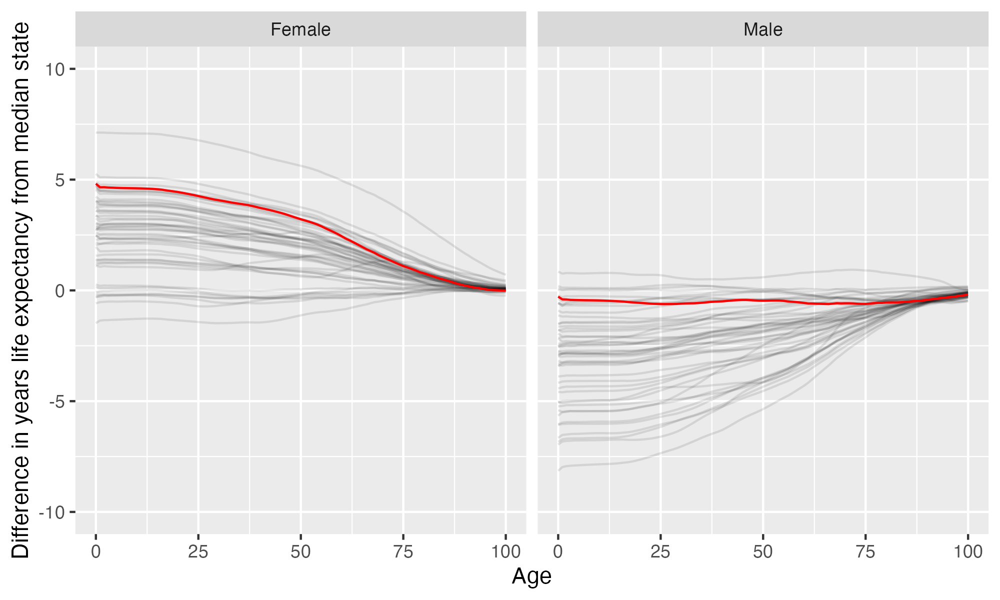

University of Massachusetts-Boston
University of Massachusetts-Boston is located in Boston, Massachusetts. It is a public, 4-year or above institution.
From Wikipedia: The University of Massachusetts Boston (stylized as UMass Boston) is a public research university in Boston, Massachusetts. It is the only public research university in Boston and the third-largest campus in the five-campus University of Massachusetts system. UMass Boston is the third most diverse university in the United States. While a majority of UMass Boston students are Massachusetts residents, international students and students from other states make up a significant portion of the student body. Founded with a distinct urban mission, UMass Boston has a long history of serving the city of Boston, including numerous partnerships with local community organizations . It is an official member institution of the Coalition of Urban Serving Universities and the Coalition of Urban and Metropolitan Universities. It is classified among “R2: Doctoral Universities – High research activity”.
Overview of institution
Institution kind: Doctoral Universities: High Research Activity
Undergrad program: Balanced arts & sciences/professions, some graduate coexistence
Graduate program: Research Doctoral: Professional-dominant
Enrollment profile: High undergraduate (see more details below)
Average net price for undergrads on financial aid: $17,575 (1.3 times the equivalent cost of Harvard).
Average net price for families with $30K-48K income: $14,335 (This is $12,939 more expensive than what Harvard costs for equivalent students).
Actual price for your family: Go here to see what your family may be asked to pay. It can be MUCH lower than the average price but also higher for some.
Size and setting: Four-year, large, primarily nonresidential
In state percentage: 83.5% of first year students come from Massachusetts
In US percentage: 93.9% of first year students come from the US (note that 0.4% have no residence reported)
Graduation rate (within 6 years) for students seeking a Bachelors: 49% (this is what is usually reported as “graduation rate”)
Graduation rate (within 4 years) for students seeking a Bachelors: 26.8%
Percent of students seeking a Bachelors who transfer out of this institution: 25.2%
Student to tenure-stream faculty ratio: 21.6 (undergrads to tenure-stream faculty) [Tenure explained]
Student to faculty ratio: 15 (undergrads to all faculty)
Degrees offered: Certificate of less than 1 year, Certificate of at least 12 weeks but less than 1 year, Bachelor’s degree, Postbaccalaureate certificate, Master’s degree, Post master’s certificate, Doctor’s degree: research scholarship, Doctor’s degree: professional practice
Schedule: Semester
Institution provides on campus housing: Yes
Dorm capacity: There are enough dorm beds for 1077 students
Freshmen required to live on campus: No
Meal plan: Yes, number of meals in the maximum meal plan offered
Covid vaccination requirement for students: At some point during the pandemic (this may have changed), this institution required students to be vaccinated against covid (based on info from here)
Covid vaccination requirement for faculty/staff: This institution was never reported as requiring covid vaccination for faculty and/or staff (based on info from here)
Advanced placement (AP) credits used: Yes
Disabilities: 5 percent of undergrads are registered as having disabilities.
Overview of location
- Abortion in this state: Protective (based on https://states.guttmacher.org/policies/ as of May 10, 2023)
- Gun law stringency: A- (higher grade = more stringent)
- State rep support for contraception: 100% of US reps from this state voted in favor of legal protections for contraception.
- State rep support for recognizing same-sex and interracial marriage: 100% of US reps from this state voted in favor of requiring states to recognize same-sex and interracial marriages performed in other states
- Anti-trans legislative risk: Safest (based on Erin Reed’s work, as of May 19, 2023)
- Ecological region: Northeastern coastal forests
- Biome: Temperate Broadleaf & Mixed Forests
- Distance to mountains: 43.3 miles to Appalachian Mountains
- Climate: See overview at WeatherSpark
Similar institutions
This is using information about school size, acceptance rate, yield rate, graduation rate, cost, athletic conference, and similar metrics, but it can miss important axes of similarity (for example, culinary versus hair styling schools).
Map
Enrollment
| University of Massachusetts-Boston | Change over ≤ 11 years | Trend | Little East Conference | Doctoral Universities: High Research Activity | |
|---|---|---|---|---|---|
| Undergrads (full time) | 9,994 (2021) |

|
↑ 206 per year |
||
| Undergrads (part time) | 2,275 (2021) |

|
↓ -130 per year |
||
| Grad students (full time) | 1,311 (2021) |

|
|||
| Grad students (part time) | 2,057 (2021) |

|
↓ -63 per year |
||
| Admission rate (undergrads) | 79% (2021) |

|
|||
| Yield rate (percent of applicants offered undergraduate admission who accept) | 17% (2021) |

|
✪✪ Better (higher) than 29% |
✪✪ Better (higher) than 33% |
|
| Graduation rate (bachelors in 6 years) | 49% (2021) |

|
✪✪ Better (higher) than 29% |
✪✪ Better (higher) than 20% |
|
| Transfer out rate (bachelors) | 25% (2021) |

|
✪✪✪✪✪ Better (lower) than 100% |
✪✪ Better (lower) than 37% |
Student financing
At many universities, almost no students pay the listed tuition and fees (“sticker price”): instead, their financial aid package lowers this dramatically, but how much students pay can vary substantially based on family income and other factors. The tuition below is the average across many students receiving aid: your family may be asked to pay less or more than this.
| University of Massachusetts-Boston | Change over ≤ 11 years | Trend | Little East Conference | Doctoral Universities: High Research Activity | |
|---|---|---|---|---|---|
| Average net price (for students awarded aid) | $17,575 (2020) |

|
↑ $829 per year |
✪✪✪ Better (lower) than 57% |
✪✪✪ Better (lower) than 42% |
| Undergrads getting federal aid | 90% (2021) |

|
✪✪✪✪✪ Better (higher) than 86% |
✪✪✪✪✪ Better (higher) than 94% |
|
| Undergrads getting any aid | 95% (2021) |

|
✪ Better (higher) than 14% |
✪✪✪ Better (higher) than 53% |
|
| Undergrads getting Pell grants | 53% (2021) |

|
✪✪✪✪✪ Better (higher) than 100% |
✪✪✪✪✪ Better (higher) than 83% |
Teaching
| University of Massachusetts-Boston | Change over ≤ 11 years | Trend | Little East Conference | Doctoral Universities: High Research Activity | |
|---|---|---|---|---|---|
| Undergrads per tenure track instructor (lower is better) | 22 (2020) |

|
↑ 0.4 per year |
✪ Better (lower) than 14% |
✪✪ Better (lower) than 39% |
| Undergrads per instructor (lower is better) | 15 (2020) |

|
✪✪✪ Better (lower) than 57% |
✪✪✪ Better (lower) than 43% |
|
| Total instructors | 684 (2020) |

|
|||
| Tenure track instructors | 475 (2020) |

|
|||
| Non-tenure track instructors | 209 (2020) |

|
↑ 8.8 per year |
Student details
| University of Massachusetts-Boston | Change over ≤ 11 years | |
|---|---|---|
| Dorm capacity | 1,077 (2021) |

|
| Percent of undergrads with registered disabilities (≤3 is rounded up to 3) | 5% (2021) |

|
Institution finances
| University of Massachusetts-Boston | Change over ≤ 11 years | Trend | Little East Conference | Doctoral Universities: High Research Activity | |
|---|---|---|---|---|---|
| Revenue from tution and fees | 36% (2021) |

|
✪ Better (lower) than 14% |
✪✪ Better (lower) than 35% |
|
| Revenue minus expenses | $60 M (2021) |

|
✪✪✪✪✪ Better (higher) than 100% |
✪✪✪ Better (higher) than 52% |
|
| Revenue | $510 M (2021) |

|
↑ $17 M per year |
||
| Expenses | $449 M (2021) |

|
↑ $16 M per year |
||
| Assets | $1.2 B (2021) |

|
↑ $51 M per year |
✪✪✪✪✪ Better (higher) than 100% |
✪✪✪✪ Better (higher) than 66% |
Graduation rates
Graduation rates for bachelor’s degrees within 150% of normal time (6 years for a 4-year degree). Note that this uses US federal demographic data: it only has two genders and a specified set of ethnicities and races. For groups with small numbers, the graduation rate may be highly variable year to year (do all three people in this group graduate this year or just two of three, for example).
| University of Massachusetts-Boston | Change over ≤ 11 years | Little East Conference | Doctoral Universities: High Research Activity | |
|---|---|---|---|---|
| Total | 49% (2021) |

|
✪✪ Better (higher) than 29% |
✪✪ Better (higher) than 20% |
| Men | 45% (2021) |

|
✪✪ Better (higher) than 29% |
✪✪ Better (higher) than 23% |
| Women | 53% (2021) |

|
✪✪ Better (higher) than 29% |
✪ Better (higher) than 20% |
| American Indian or Alaska Native men | 0% (2020) |

|
✪✪✪ Better (higher) than 50% |
✪✪ Better (higher) than 28% |
| American Indian or Alaska Native women | 33% (2020) |

|
✪✪✪ Better (higher) than 50% |
✪✪✪ Better (higher) than 43% |
| Asian men | 53% (2021) |

|
✪✪✪✪ Better (higher) than 71% |
✪✪ Better (higher) than 24% |
| Asian women | 57% (2021) |

|
✪✪✪ Better (higher) than 43% |
✪ Better (higher) than 14% |
| Black or African American men | 36% (2021) |

|
✪✪✪✪ Better (higher) than 71% |
✪✪ Better (higher) than 32% |
| Black or African American women | 49% (2021) |

|
✪✪✪✪ Better (higher) than 71% |
✪✪ Better (higher) than 37% |
| Hispanic men | 38% (2021) |

|
✪✪ Better (higher) than 29% |
✪✪ Better (higher) than 21% |
| Hispanic women | 44% (2021) |

|
✪✪✪ Better (higher) than 57% |
✪✪ Better (higher) than 22% |
| Native Hawaiian or other Pacific Islander men | 100% (2021) |

|
✪✪✪✪✪ Better (higher) than 100% |
✪✪✪✪✪ Better (higher) than 100% |
| White men | 48% (2021) |

|
✪✪ Better (higher) than 29% |
✪✪ Better (higher) than 21% |
| White women | 56% (2021) |

|
✪✪ Better (higher) than 29% |
✪ Better (higher) than 20% |
| Two or more races men | 27% (2021) |

|
✪✪ Better (higher) than 29% |
✪ Better (higher) than 11% |
| Two or more races women | 60% (2021) |

|
✪✪✪ Better (higher) than 57% |
✪✪✪ Better (higher) than 53% |
| Nonresident alien men | 48% (2021) |

|
✪✪ Better (higher) than 33% |
✪✪ Better (higher) than 30% |
| Nonresident alien women | 58% (2021) |

|
✪✪✪✪✪ Better (higher) than 100% |
✪✪ Better (higher) than 25% |
Freshmen demographics
Demographic data for first time degree-seeking students. Note that this uses US federal demographic data: it only has two genders and a specified set of ethnicities and races.
| University of Massachusetts-Boston | Change over ≤ 11 years | |
|---|---|---|
| Men (percent freshmen) | 41% (2021) |

|
| Women (percent freshmen) | 59% (2021) |

|
| American Indian or Alaska Native men (percent freshmen) | 0.1% (2021) |

|
| American Indian or Alaska Native women (percent freshmen) | 0.1% (2021) |

|
| Asian men (percent freshmen) | 8.0% (2021) |

|
| Asian women (percent freshmen) | 7.7% (2021) |

|
| Black or African American men (percent freshmen) | 5.2% (2021) |

|
| Black or African American women (percent freshmen) | 11% (2021) |

|
| Hispanic men (percent freshmen) | 8.4% (2021) |

|
| Hispanic women (percent freshmen) | 15% (2021) |

|
| Native Hawaiian or Other Pacific Islander men (percent freshmen) | 0% (2021) |

|
| Native Hawaiian or Other Pacific Islander women (percent freshmen) | 0% (2021) |

|
| White men (percent freshmen) | 13% (2021) |

|
| White women (percent freshmen) | 20% (2021) |

|
| Two or more races men (percent freshmen) | 1.6% (2021) |

|
| Two or more races women (percent freshmen) | 2.4% (2021) |

|
| Race ethnicity unknown men (percent freshmen) | 1.4% (2021) |

|
| Race ethnicity unknown women (percent freshmen) | 1.6% (2021) |

|
| Nonresident alien men (percent freshmen) | 3.8% (2021) |

|
| Nonresident alien women (percent freshmen) | 2.0% (2021) |

|
Freshmen geography
| University of Massachusetts-Boston | Change over ≤ 11 years | |
|---|---|---|
| In state | 84% (2021) |

|
| US | 94% (2021) |

|
| Not reported | 0.4% (2021) |

|
Tenure track faculty
Tenure track faculty are those who are eligible for tenure. This includes both pre-tenure and tenured faculty. Once faculty get tenure, they are (generally) protected from being fired for intellectual reasons, helping to ensure their freedom in teaching and research. They can still lose their positions for misconduct, financial problems, not fulfilling their duties, or other reasons. Note that this chart uses US federal demographic data: it only has two genders and a specified set of ethnicities and races.
| University of Massachusetts-Boston | Change over ≤ 11 years | Trend | |
|---|---|---|---|
| Total (tenure-track count) | 475 (2020) |

|
|
| Women (tenure-track count) | 233 (2020) |

|
|
| Men (tenure-track count) | 242 (2020) |

|
|
| American Indian or Alaska Native (tenure-track count) | 2 (2020) |

|
|
| Asian (tenure-track count) | 92 (2020) |

|
↑ 4.9 per year |
| Black or African American (tenure-track count) | 37 (2020) |

|
↑ 2.0 per year |
| Hispanic or Latino (tenure-track count) | 31 (2020) |

|
|
| Native Hawaiian or other Pacific Islander (tenure-track count) | 0 (2020) |

|
|
| White (tenure-track count) | 289 (2020) |

|
|
| Two or more races (tenure-track count) | 4 (2020) |

|
↑ 0.5 per year |
| Nonresident alien (tenure-track count) | 20 (2020) |

|
Non-tenure track faculty
Non-tenure track faculty are not eligible for tenure. Some are hired one semester at a time, some have multi-year contracts. They typically have a higher teaching load than tenure track faculty, leaving less time for research or other creative endeavors. They are also easier to fire than tenured faculty. Sometimes they are external experts (a noted musician, a former senator) who are hired to teach some classes without the expected permanence of a tenure-track position. Note that this chart uses US federal demographic data: it only has two genders and a specified set of ethnicities and races.
| University of Massachusetts-Boston | Change over ≤ 11 years | Trend | |
|---|---|---|---|
| Total (non-tenure-track count) | 209 (2020) |

|
↑ 8.8 per year |
| Women (non-tenure-track count) | 115 (2020) |

|
↑ 5.0 per year |
| Men (non-tenure-track count) | 94 (2020) |

|
↑ 3.8 per year |
| American Indian or Alaska Native (non-tenure-track count) | 0 (2020) |

|
|
| Asian (non-tenure-track count) | 19 (2020) |

|
↑ 1.7 per year |
| Black or African American (non-tenure-track count) | 14 (2020) |

|
↑ 0.8 per year |
| Hispanic or Latino (non-tenure-track count) | 10 (2020) |

|
↑ 1.0 per year |
| Native Hawaiian or other Pacific Islander (non-tenure-track count) | 0 (2020) |

|
|
| White (non-tenure-track count) | 159 (2020) |

|
↑ 9.2 per year |
| Two or more races (non-tenure-track count) | 1 (2020) |

|
|
| Nonresident alien (non-tenure-track count) | 4 (2020) |

|
Library facilities
| University of Massachusetts-Boston | Change over ≤ 11 years | Trend | Little East Conference | Doctoral Universities: High Research Activity | |
|---|---|---|---|---|---|
| Number of physical books | 386,298 (2021) |

|
↓ -11,654 per year |
✪✪✪✪✪ Better (higher) than 86% |
✪✪ Better (higher) than 33% |
| Physical library circulations per students and faculty | 0.6 (2020) |

|
↓ -0.4 per year |
✪ Better (higher) than 14% |
✪ Better (higher) than 17% |
| Digital library circulations per students and faculty | 43 (2020) |

|
✪✪✪✪ Better (higher) than 71% |
✪✪✪ Better (higher) than 60% |
Life expectancy
This hopefully will not be relevant for potential students, but it may be for people moving to an area longer term, such as faculty and staff choosing where to live. This uses information from US National Vital Statistics Reports for 2020; like much federal data, it assumes people are male or female. For age difference from median, it is from the median state, averaging across all genders (one consequence of this is that the difference from the median life expectancy is almost always negative for men).
- Life expectancy at birth: 81.5 years women (4.8 years over the median), 76.4 years men (0.3 years below the median)
- Remaining life expectancy at age 18: 63.9 years women (4.5 years over the median), 58.9 years men (0.5 years below the median)
- Remaining life expectancy at age 30: 52.2 years women (4.1 years over the median), 47.6 years men (0.6 years below the median)
- Remaining life expectancy at age 45: 38 years women (3.5 years over the median), 34.1 years men (0.4 years below the median)
- Remaining life expectancy at age 60: 24.4 years women (2.4 years over the median), 21.4 years men (0.6 years below the median)
We can also plot the extra / fewer years of life expected for this state (red) compared to other states (dark gray) at each age. Again, this is normalized for the median state.

SAT scores
| University of Massachusetts-Boston | Change over ≤ 11 years | Trend | |
|---|---|---|---|
| Applicants submitting SAT | 21% (2021) |

|
|
| SAT Evidence Based Reading and Writing 25th percentile score | 530 (2021) |

|
|
| SAT Evidence Based Reading and Writing 75th percentile score | 640 (2021) |

|
|
| SAT Math 25th percentile score | 530 (2021) |

|
↑ 6.8 per year |
| SAT Math 75th percentile score | 640 (2021) |

|
↑ 8.4 per year |
ACT scores
| University of Massachusetts-Boston | Change over ≤ 11 years | |
|---|---|---|
| Applicants submitting ACT | 2% (2021) |

|
| ACT Composite 25th percentile score | 24 (2021) |

|
| ACT Composite 75th percentile score | 30 (2021) |

|
| ACT English 25th percentile score | 24 (2021) |

|
| ACT English 75th percentile score | 34 (2021) |

|
| ACT Math 25th percentile score | 22 (2021) |

|
| ACT Math 75th percentile score | 28 (2021) |

|